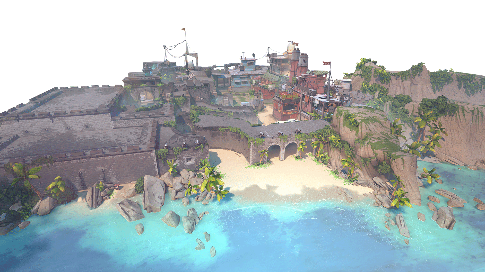

Fecture

Egy szigorúan titkos kutatóintézet szétszakadt egy sikertelen radianitekísérlet miatt. A térképen megosztott védekezési lehetőségek közül a tiéd a választás: találkozz a támadókkal a saját gyepükön, vagy húzd le a nyílásokat, hogy átvészeld a támadást.
Valóság-beli elhelyezkedés: Santa Fe, New Mexico, USA
Breeze

Gyönyörködjön a történelmi romok és tengerparti barlangok látványában ebben a trópusi paradicsomban. De hozz valami fedezéket. Szüksége lesz rá a nyitott terekhez és a hosszú távú kapcsolókhoz.
Valóság-beli elhelyezkedés: Atlantic Ocean
Icebox

A következő csatatered egy titkos Királyság-feltárási helyszín. A két hóval és fémmel védett oldal némi vízszintes finomságot is igényel. Használja ki a zipline-okat, és soha nem fognak jönni látni!
Valóság-beli elhelyezkedés: Bennett Island, Russia
Bind

Két oldal. Nincs közép. Balt vagy jobbot kell választani. Mindkettő közvetlen utakat kínál a támadók számára, és egy pár egyirányú teleportáló megkönnyíti a mozgást.
Valóság-beli elhelyezkedés: Rabat, Morocco
Haven

Egy elfeledett kolostor alatt lárma támad a rivális ügynököktől, akik három helyszín irányításáért csapnak össze. Több területet kell irányítani, de a védők használhatják az extra helyet agresszív támadásra.
Valóság-beli elhelyezkedés: Thimphu, Bhutan
Split

Ha messzire akarsz menni, fel kell menned. A megemelt középponttal kettéosztott helypár gyors mozgást tesz lehetővé két zipline segítségével. Minden telephelyen egy tornyot építenek, amely elengedhetetlen az irányításhoz. Ne felejtsen el felfele is figyelni, mielőtt minden az egekig repül.
Valóság-beli elhelyezkedés: Tokyo, Japan
Ascent

Az Ascent két területét egy nyitott tér választja el a kisebb helyzeti csatákhoz. Minden helyszín megerősíthető visszafordíthatatlan bombaajtókkal; ha egyszer lekerülnek, el kell pusztítania őket, vagy más utat kell találnia.
Valóság-beli elhelyezkedés: Venice, Italy